podobi
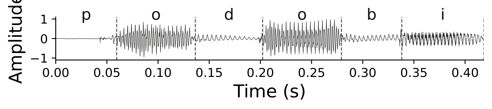
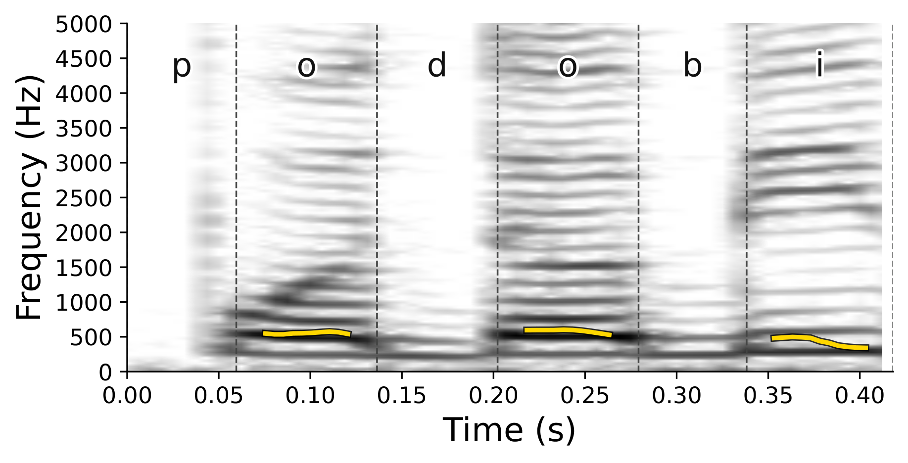
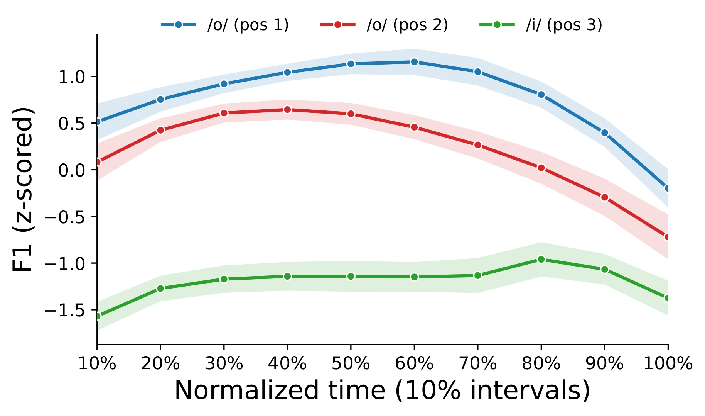



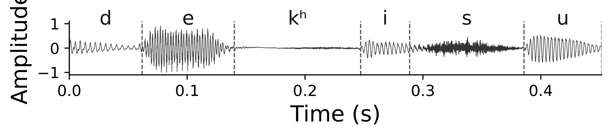
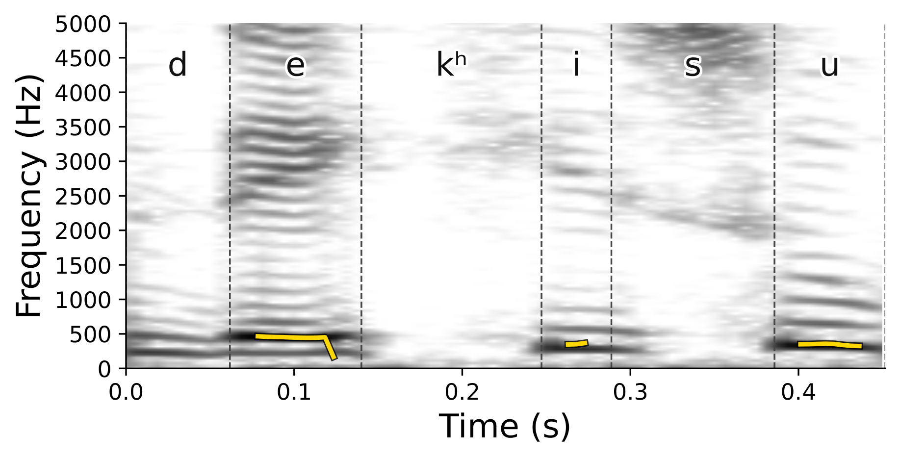

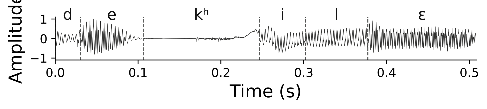

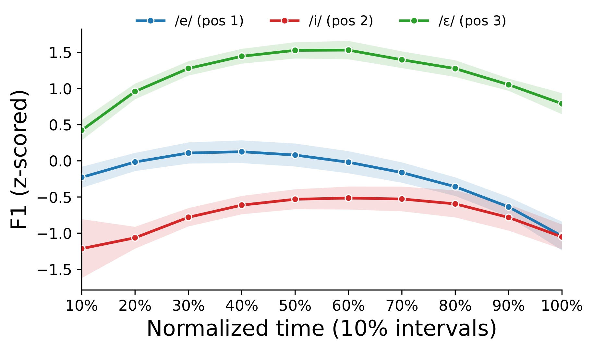
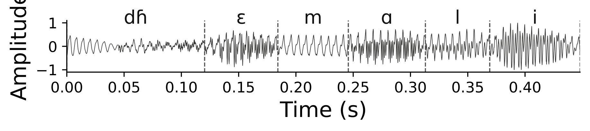
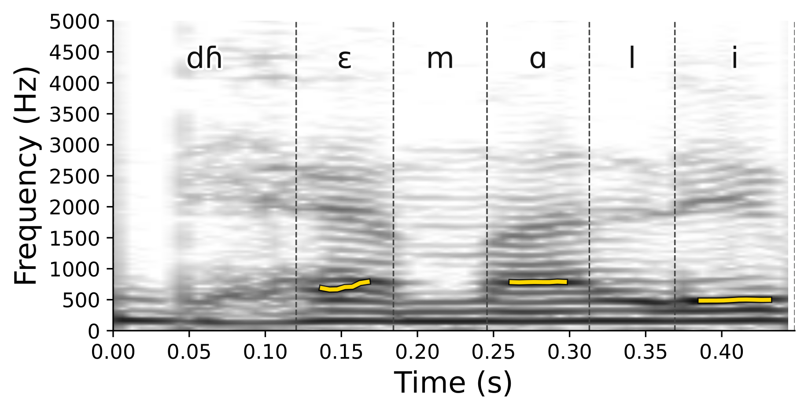
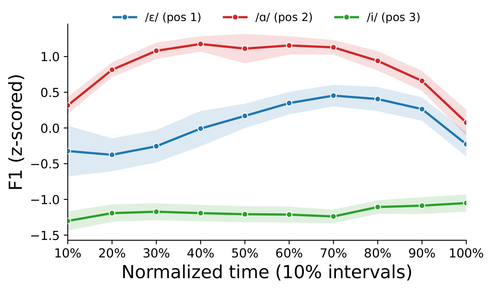
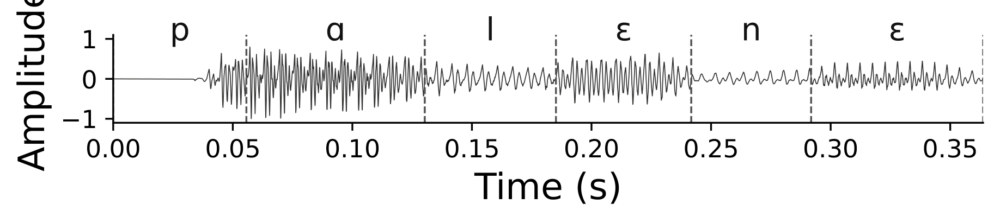
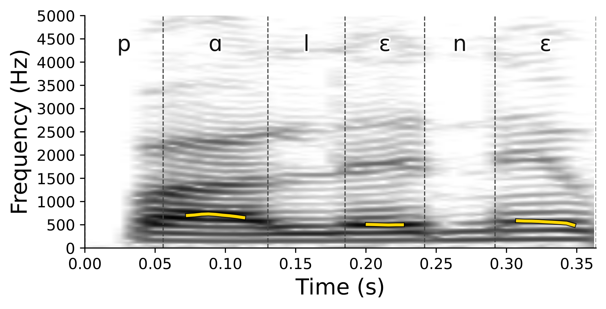
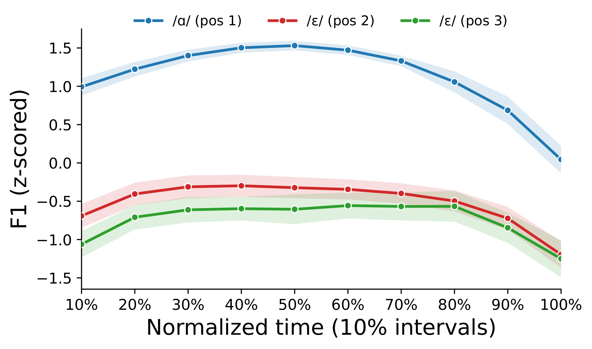
Replace this with your analysis note for the mixed pattern.
| Pair | [+ATR] token | [-ATR] token | F1 trend | Spectrogram observation | Notes |
|---|---|---|---|---|---|
| Pair 1 | podobi | dekhile | Replace with trend summary | Replace with your observation | Replace with interpretation |
| Pair 2 | palene | dhiemali | Replace with trend summary | Replace with your observation | Replace with interpretation |